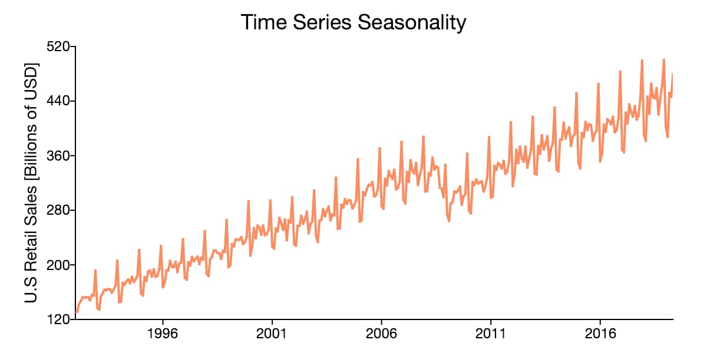
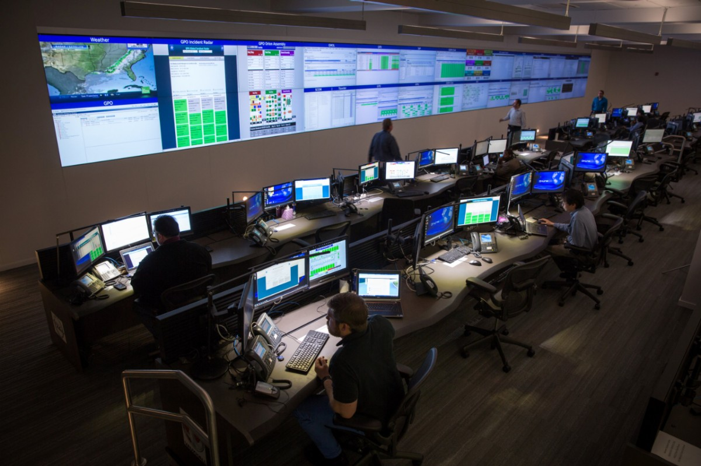
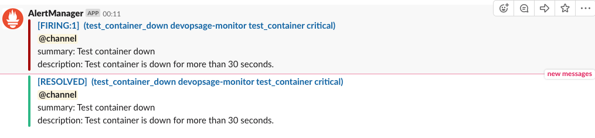
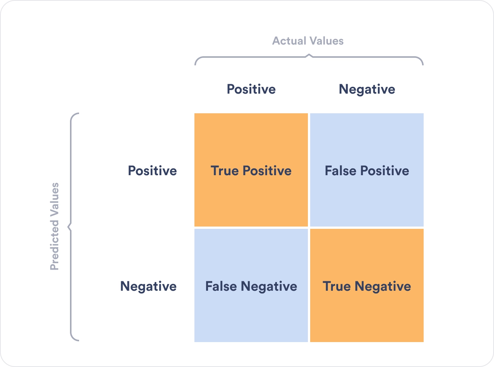
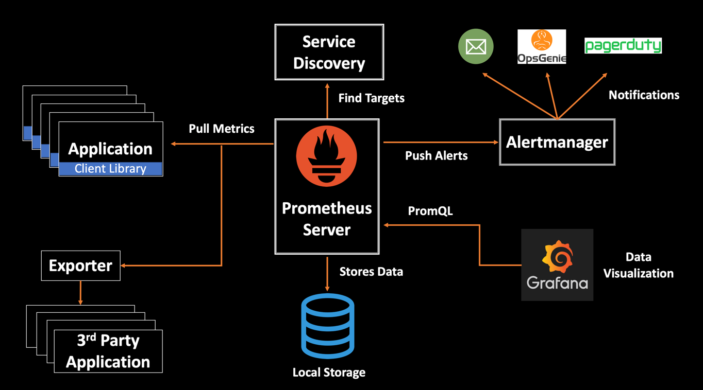

6. Monitoring
Machine Learning Operations
HOGENT applied
computer science
Thomas Aelbrecht & Martijn Saelens
2023-2024
Learning goals
- Understanding the concept of monitoring
- Understanding the concept of alerting
- Understanding how Prometheus, Grafana, AlertManager, a receiver, and
Node Exporter work together
- Being able to set up monitoring using Prometheus
- Monitoring of an application or the result of an ML pipeline
- Monitoring of a VM or host
- Being able to set up visualization dashboards using Grafana
- Being able to set up alerting using Alert Manager and a receiver
such as Discord
Why?
Do you know if …
- … a new version of an AI model has regressed?
- … a new model uses too much resources?
- … a VM/container is down?
- … a VM/container/application uses too much resources?
- … the network is saturated?
- … the temperature of hardware components is too high?
- … ?
Knowing is everything
- “Assumption is the mother of all screw ups”
-
Eugene Lewis Fordsworthe
- “To measure is to know”
-
Lord Kelvin (rephrased)
Knowing is everything
- Monitoring reduces downtime
- If you don’t monitor, how do you even know if/when it goes
down?
- Sometimes allows to predict errors in advance
- e.g. disk space is filling up
- Metrics tell a story
- If you know the error, you can fix it
- Monitoring gathers the clues for you
Metrics logging
- Gather metrics
- Often numbers, percentages, …
- Things you can measure
- e.g. CPU load, RAM usage, bandwidth consumption, disk storage,
…
- Often stored in a time series database

Prometheus overview
https://prometheus.io/
- Open source
- Originally from SoundCloud
- Now part of Cloud Native Computing Foundation
- Collects and stores metrics as time series data
- time stamp
- key-value pairs called labels
Features
- Time series collections via pull model over HTTP
- PromQL query language
- Service discovery or static configuration
- No reliance on distributed storage
- Exporters
- for exposing metrics so Prometheus can scrape them
- e.g.
- Node exporter for basic system metrics
- Mysqld exporter for MySQL
- Kubernetes
- SNMP
- …
Dashboard
Most datacenters have a dashboard to visualize metrics.

Grafana
https://grafana.com/
- Open source
- Originally from Orbitz
- Visualizes time series data
- Allows for basic alerting
- Has a public
repository for dashboards
- You can export and import existing databases to this library
Tips
Make sure that …
- … the refresh interval on the dashboards is acceptable
- Don’t forget that the interval on the metrics server / monitoring
tool must also match
- … the dashboard doesn’t burn into the screen
Alerting
- A dashboard is a passive way to let you now if things go wrong.
- You can’t constantly keep looking at the dashboard
- How about you get notified is something suspicious happens?

Alert rules
When do you want to trigger an alert?
- E.g.
- CPU is above 90% for 10 minutes
- Disk is reading more than 50 MB/s for 5 minutes
- Physical hardware component is too hot (> 95°C)
- A container has disappeared
- More than 80% of MySQL connections are in use for 2 minutes
- …
Receivers
To where should we send the alerts?
- E.g.
- E-mail
- Teams
- Slack
- Matrix.org
- Discord
- Often done by webhooks
Resolving
- How do you know when the problem is fixed?
- Again, it is not handy to constantly look at the metrics or
dashboards
- Solution: alert again when a previous alert is no longer valid.
- E.g. the CPU load has dropped to 10 %, send a notification that the
CPU is no longer at 100%
Alerting fatigue

- The most work of setting up monitoring and alerting is adjusting the
rules
- Looking for a nice balance between false positives and false
negatives
- Balance is unique for each case/situation
- Too much false positives: alerting fatigue
- Too much false negatives: you have no clue that something is
happening
AlertManager
- Also developed by the Prometheus project
- Has 3 core concepts:
- Grouping: combining alerts of similar nature into a single
notification
- Inhibition: suppressing notifications for certain alerts if certain
other alerts are already firing
- Silences: mute alerts for a given time
Prometheus + Grafana + AlertManager

Get started with the lab assignment!
Monitoring a mocked model
- Create a mock model that provides metrics
- Set up Prometheus
- Set up Grafana
- Set up AlertManager
- Set up Discord
- Receive alerts from Discord
Monitoring a VM
- Create a VM
- Set up Node Exporter on the VM
- Import a dashboard for Node Exporter in Grafana
- Create an alert for CPU load
- Stresstest the VM to test the alert
- Receive alerts when the rules are triggered
- Receive a resolve alert when the CPU usage is back to normal